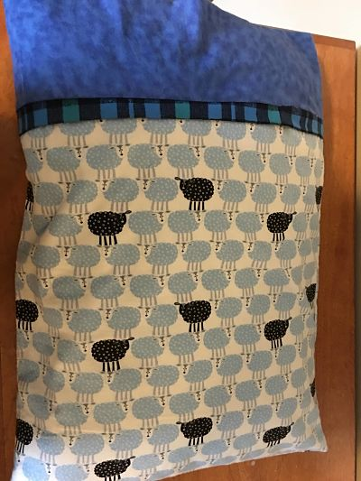

On the 8th rotation, we learnt about sewing and embroidering.
For our first assignment, we embroidered a hat using the Tajima Sai embroidering machine. In order for the process to work, I used two types of backing for the hat. The backing helps fortify the hat under the pressure of the sewing. I used one soft backing and one hard backing. The result came out satisfactorily, howerver, I lost the hat and therefore I could not take any picture of it.
For our second assignment, we sewed our own pillow case using the sewing machine. First of all, I picked three of my most preferred designs from an abundance of fabric, and then I cut it into three seams of differet size: a big rectangular one, a smaller rectangular one and a thin long piece. Then I applied a method called "a burrito method", as a bascially fold the pieces together, sewed them and repeated the process. This complication helps keep the sewing lines from showing up. The hardest challenge during the process of making this pillowcase is using the sewing machine. At first, I looked easy, however,it was really difficult to not go off track on the sewing and ended up having vertical sewing lines, as oppose to a perfectly straight one. I had to redo my sewing once as I made a big mistake and went too far off track. Fortunately, the final product as quite satisfactory.
 Back to Index